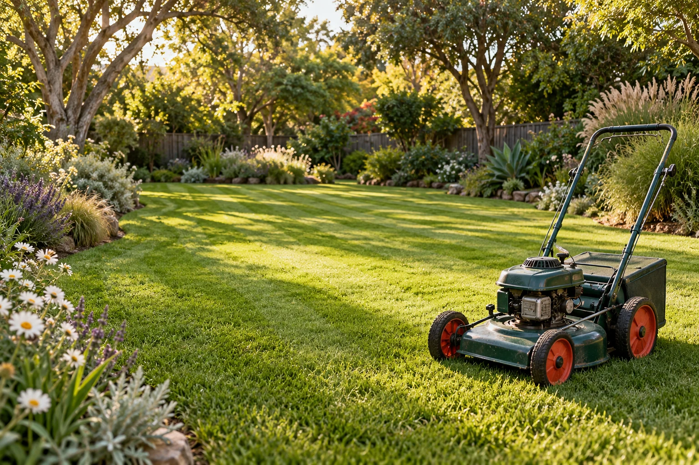

Tell us about your patch.
A tiny patch? An enthusiastic jungle? Tell our team what needs a little attention. A photo or two can help us plan the job.

Just a little off the top? Or a proper spruce-up? Tell our team about your patch and we’ll make a plan.
That barefoot-on-the-lawn feeling, all over again. I’ll give it a tidy mow, crisp edges, and a clean finish around paths and driveways.
Keep the good growth and tame the wild bits. I’ll shape the hedges, take care of light pruning, and give your garden beds some attention.
Garden getting away from you? Let’s give that corner a fresh start and make room for the good growth. Tell our team what needs tackling.
A recurring rhythm that fits your garden. Build a mix of mowing and maintenance, then discuss a schedule that suits the season.
Borrow my mower for a minute. No petrol, no clippings. Just a very satisfying little tidy.
Go on. Make Uncle Dusty proud.
Your garden could be next.
Nothing fancy.
Just good old garden care.
A tiny patch? An enthusiastic jungle? Tell our team what needs a little attention. A photo or two can help us plan the job.
We’ll talk through the work, agree on a quote, and find a time. A one-off tidy or regular visits with our team.
Find the sunny spot. Bring a cuppa. The best part of a garden is getting to enjoy it.
Different season, different little jobs.
Here’s what’s on my garden list.
The garden’s waking up. Give it a little attention now and make room for the good growth.
Tell us your suburb and what needs doing.
Our team will help with the next steps.
Yes. Describe what needs doing in the enquiry form and let our office team know you’d like a one-off visit.
Tell our team if you have a green bin or prefer clippings to be mulched. Removal needs depend on the job and should be agreed as part of the final quote.
Add your job details, contact name, and phone number. An email address is optional. The form prepares a draft to admin@uncledustys.com.au for you to review and send from your mail app. Our office team can then discuss the work with you.
Put everything you have in mind in the job details. Our office team will help you plan the right mix of garden care.